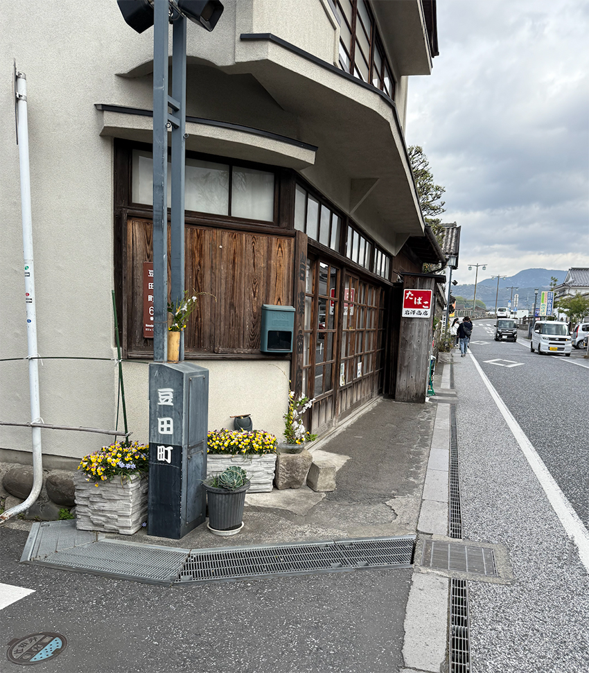
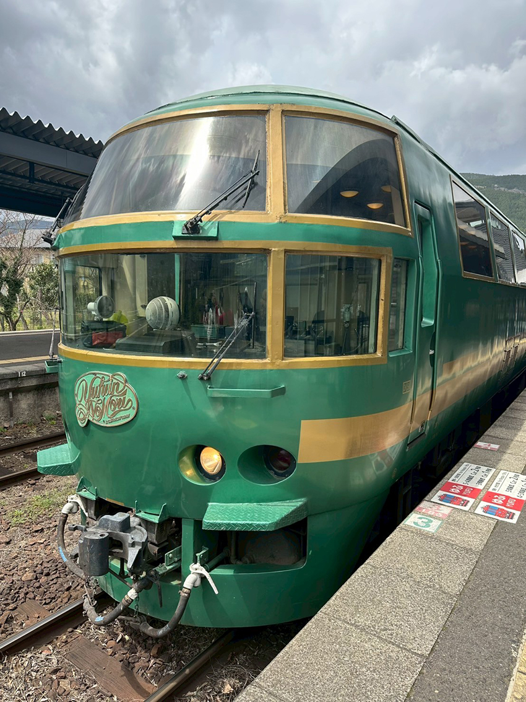
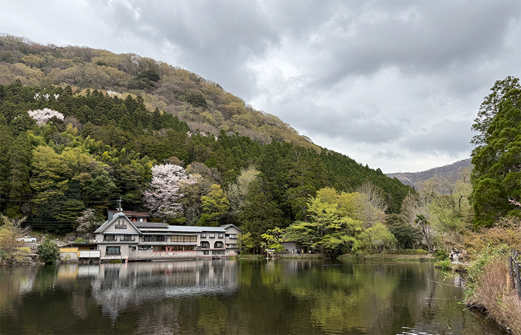
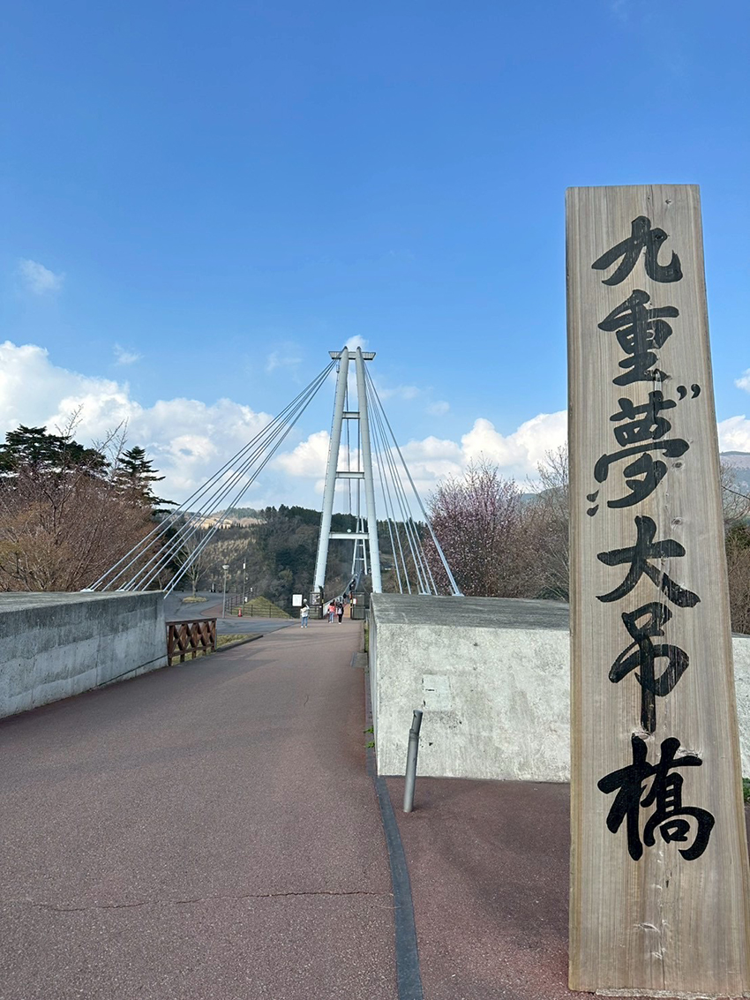
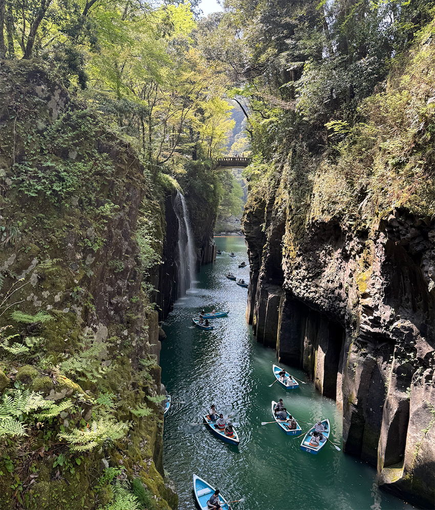
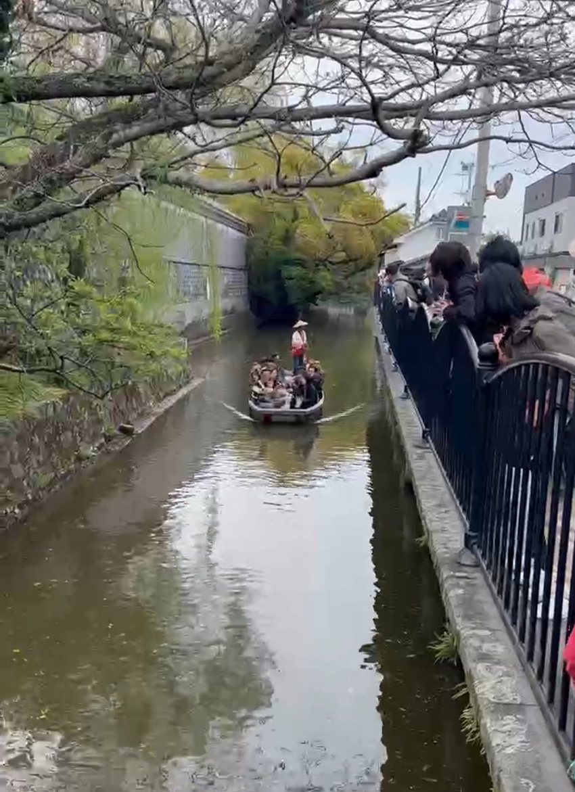
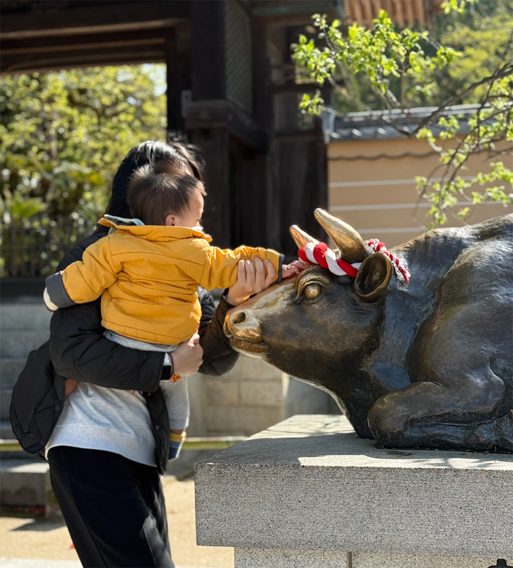

雖然去了日本很多次，但這是第一次帶寶寶出國，各種出國前的準備：研究寶寶的食物外，還有不斷爬文如何讓寶寶坐飛機時，不要哭鬧，買了各種玩具、零食，就為了飛機上的兩小時爸媽能夠安全下庄。終於到了出國當天，到了機場後，我們先吃東西，也找到寶寶可以吃的，此時，讓人讚嘆的事情發生了，便便了！！（這應該只有當了父母的才知道為何這麼開心）
坐上飛機，開始泡牛奶要給寶寶喝，當開始滑行要起飛時，寶寶睡了！！這一切媽媽都覺得不可思議，會不會太順利？兩小時過後，到達福岡機場，第一站-Outlet，接著逛完後就到了福岡市區，我們就到附近找了一間居酒屋，一開始有先進去問他們是否可以帶寶寶（基於禮貌，還是要先問一下店家，有些可能會拒絕你），就這樣第一天讓寶寶體驗酒池肉林的生活，哈哈。
第二天早上因為跟團，所以8點就集合出發了，昨晚寶寶也意外地睡得很好，在遊覽車上非常興奮，一直看窗外美景。第一個景點到了-豆田町老街，街道古色古香，有小京都之稱。
|  |
|  |
接著要搭由布院之森列車，火車進站寶寶也看的很驚奇，車廂內部裝潢都是木造，很有森林氣息坐完火車後，就到由布院，我發現了一間賣超多宮崎駿的東西，可以逛超級久，都不想出來。此時，寶寶的爸爸帶他去看動物，有一間店可以餵羊和看魚，寶寶。也玩得很開心。
|  | ||
| 由布院最有名的景點是-金鱗湖，一位古人毛利空桑來到此湖，夕陽餘暉映照下，見湖泊彷彿魚鱗般閃閃發亮，所以稱之。 |
第三天去日本第一大吊橋-九重夢大橋，標高777公尺，全長390公尺的人行專用道，帶著寶寶在上面行走，真的會有點腳軟。但這個景點就只有走一個橋，從市區到這花了兩小時路程，說實在有點不值得，但也沒辦法~跟團就是這樣，沒辦法去隨意變更地點，總之應該此生只會來一次。
|  |
下午又是一個大自然行程，但是非常鍛鍊體力，是要爬上坡走下坡的行程，這時候要感恩讚嘆老公，這一路全程揹著寶寶上刀山下油鍋，帶寶寶看了美麗的懸崖景色，還體驗了流水麵，寶寶也吃得大快朵頤很滿足~
|  |
經過一整天苦力的行程，晚上就在飯店裡泡溫泉放鬆。第四天到了柳川坐船，船上的船夫會邊划船邊唱歌，我們整船也彷彿是行動KTV跟著齊唱，寶寶也是聽得津津有味，還拍拍手給船夫掌聲。
|  |
下午是跟團必定會塞的點-免稅店，那就不特別贅述了。晚上再次住回福岡市區，到附近的唐吉訶德大採買，因為跟團沒有太多可逛街的行程，加上我們又帶著寶寶，所以決定所有要買的藥妝、餅乾…都在這裡買齊。寶寶大概逛不到一小時，就不坐推車哭鬧了。最後我們也只好快狠準地逛完結帳，推寶寶回飯店休息了。
最後一天早上去了太宅府天滿宮，他類似台灣的孔廟，到了日本大考前，會有許多人來參拜，他最著名的的就是門口那隻牛，聽說摸牛可得到好運~插播一下，此時我老公衝去他最愛的一蘭拉麵，九州可是一蘭的發源地，所以到這一定要吃一下~而我是選擇逛街，我很喜歡逛日本這種來參拜旁邊的小店，在這邊可以買很多的日本小禮物送給朋友們。
|  |
中午準備要坐飛機回家了，準備起飛時，一樣讓寶寶喝奶，結果他邊喝邊睡著了，睡到快要準備降落才醒，但相較於我們，跟我們坐在一起的同團媽媽就沒這麼幸運，他說兒子上飛機前就在推車上玩到睡著了，後來上飛機他一整路都不睡覺，結果準備降落時，他有點想睡覺，加上可能耳朵不舒服，所以開始降落就狂哭、爆哭、怎麼哄都沒辦法讓他冷靜的那種崩潰。
最後降落後，媽媽跟每個經過他的乘客說抱歉（一直點頭），他覺得打擾到大家很愧疚也很自責，我其實很心疼捨不得他，因為很多時候媽媽們都很努力，用盡全力希望可以控制好一切，但有了小孩真的很多事情，會出乎你的預料，當你沒辦法解決時，你會慌張、失落、自責…這時有一位女士經過，看到這位媽媽道歉，他只笑笑地回了一句：沒關係，辛苦了。這句話是體諒、是鼓勵…彷彿給這位媽媽一盞明燈，告訴他沒事~你已經做的很好了。
說實在，這次帶寶寶去真的很累，隨時你要陪著他玩，怕他會吵到同行的人，帶零食、玩具，行李大概有三分之二是他的。總之，這次的旅行，寶寶的表現算不錯，比我們想像中意外的好，他爸已經在問甚麼時候要再帶他出國了（生母表示：可以先不要嗎？哈哈。）